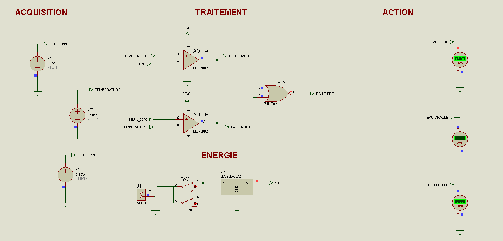

SOUAN Victor
SOUAN Victor
SOUAN Victor
SOUAN Victor
Conception électronique, simulation sous ISIS, routage ARES et validation • Semestre 1
Le système TDB-EQ43 est un thermomètre de bain autonome conçu pour indiquer visuellement si la température de l'eau est trop froide, idéale (tiède) ou trop chaude, tout en garantissant une autonomie de 24 heures et un coût composants inférieur à 20 €.
J1, interrupteur à glissière SW1 (JS202011CQN) et régulateur linéaire 5 V LM78L05ACZ fournissant la tension stable VCC, car les composants n'acceptent que 2 à 6 V alors que la LiPo 2S varie de 6,0 V à 8,4 V.U3, sensibilité 10 mV/°C) associé à un pont diviseur résistif (R1 à R5) générant deux tensions de référence : SEUIL_36°C (0,36 V visés, 353 mV simulés, soit −1,94 %) et SEUIL_39°C (0,39 V visés, 383 mV simulés, soit −1,79 %), dans la tolérance de ±5 %.AOP:A détecte EAU CHAUDE > 39 °C ; AOP:B détecte EAU FROIDE < 36 °C), suivi d'une porte logique NOR 74HC02 (PORTE:A) qui active le signal EAU TIEDE lorsque l'eau est comprise entre 36 °C et 39 °C.LED_B + 4,7 kΩ) pour l'eau froide, LED verte (LED_V + 910 Ω) pour l'eau tiède, et LED rouge (LED_R + 680 Ω) pour l'eau chaude, en logique positive.
• DDC : Dossier de Conception (rév. 3, 24/11/2026)
• DDF : Dossier de Fabrication (rév. 2) : schéma, nomenclature, typons, plan de perçage, implantation
• CAO : Schéma ISIS & Routage PCB ARES
• DDV : Dossier de Vérification (à venir)
Le planning prévisionnel (PDP) répartit le travail entre les 4 équipiers : les équipiers 3 et 4 prennent en charge les blocs Traitement et Action (architecture puis conception), les équipiers 1 et 2 les blocs Acquisition et Énergie. La vérification est croisée : j'ai les blocs Acquisition et Énergie à vérifier.
Rédacteur des paragraphes CPR_COMPARAISONS et CDT_COMPARAISONS du DDC : choix du double AOP MCP6002 en comparateurs, de la porte NOR (avec sa table de vérité) et trois simulations ISIS à 20 °C, 38 °C et 50 °C, avec une seule sortie active à chaque fois.
Rédacteur de CPR_ALLUMAGES, CPR_INTENSITES et CDT_INTENSITES : montage des LED en logique positive, courant nécessaire pour 50 mcd, calcul puis normalisation (E24) des résistances de limitation et vérification par simulation ISIS.
Relecteur des paragraphes Acquisition, Énergie, Dimensions et Coût du DDC, et de l'ensemble du DDF (schéma, nomenclature, typons, perçage, implantation, processus de fabrication).
Essais du bloc Acquisition (LM35 et seuils) et du bloc Énergie (LiPo 2S et régulateur LM78L05), à consigner dans le DDV avec résultat attendu, résultat obtenu et statut de chaque essai.
Exigence : 50 mcd à ±10 %, sous VCC = 5 V (sortie de l'AOP à 4,975 V). La tolérance de 10 % est divisée par deux pour fixer celle de la résistance (±5 %).
| LED | Courant visé | R calculée | R retenue (E24) | Courant simulé | Écart |
|---|---|---|---|---|---|
| Verte (HLMP-Y801-JPP00) | 3,23 mA | 942,7 Ω | 910 Ω | 3,34 mA | +3,41 % |
| Rouge (TLDR4900) | 5 mA | 655 Ω | 680 Ω | 4,82 mA | −3,6 % |
| Bleue (MP000436) | 0,5 mA | 4 820 Ω | 4 700 Ω | 505 µA | +1 % |
Formule utilisée : R = (VOH − Vf) / If, avec Vf = 1,93 V (verte), 1,7 V (rouge) et 2,565 V (bleue).
 Simulation ISIS • Cas 1
Simulation ISIS • Cas 1
Lorsque la tension image de la température (0,20 V) est inférieure au seuil 36 °C (0,36 V), la sortie EAU FROIDE bascule à +5,00 V (LED bleue allumée).

Simulation ISIS • Cas 2Entre 36 °C et 39 °C, les deux comparateurs sont à 0 V : la porte NOR 74HC02 active la sortie EAU TIEDE à +5,00 V (LED verte allumée).
 Simulation ISIS • Cas 3
Simulation ISIS • Cas 3
Au-dessus du seuil de sécurité de 39 °C (0,39 V), le comparateur AOP:A bascule et active la sortie EAU CHAUDE à +5,00 V (alerte LED rouge).
 CAO PCB • Proteus ARES
CAO PCB • Proteus ARES
Organisation logique de gauche à droite suivant le flux du signal : alimentation (J1, SW1, U8), capteur et pont de seuils (U3, R1–R5), traitement (MCP6002, 74HC02) et LEDs en bord de carte.
Séances 1 à 6
Séances 7 à 12
Séances 12 à 15
Séances 16 à 20